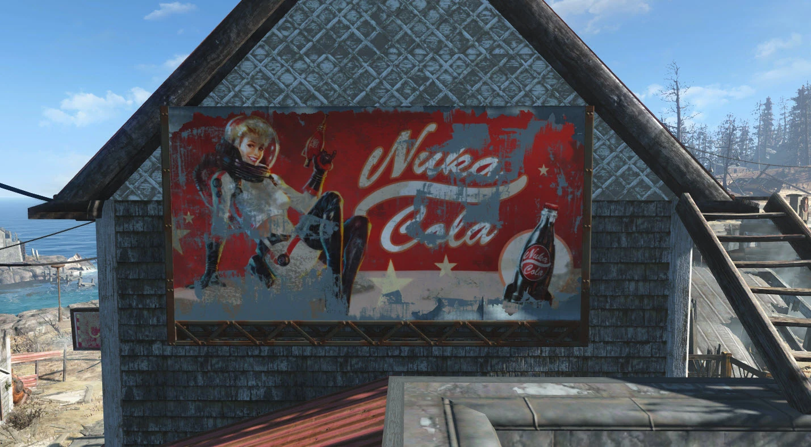
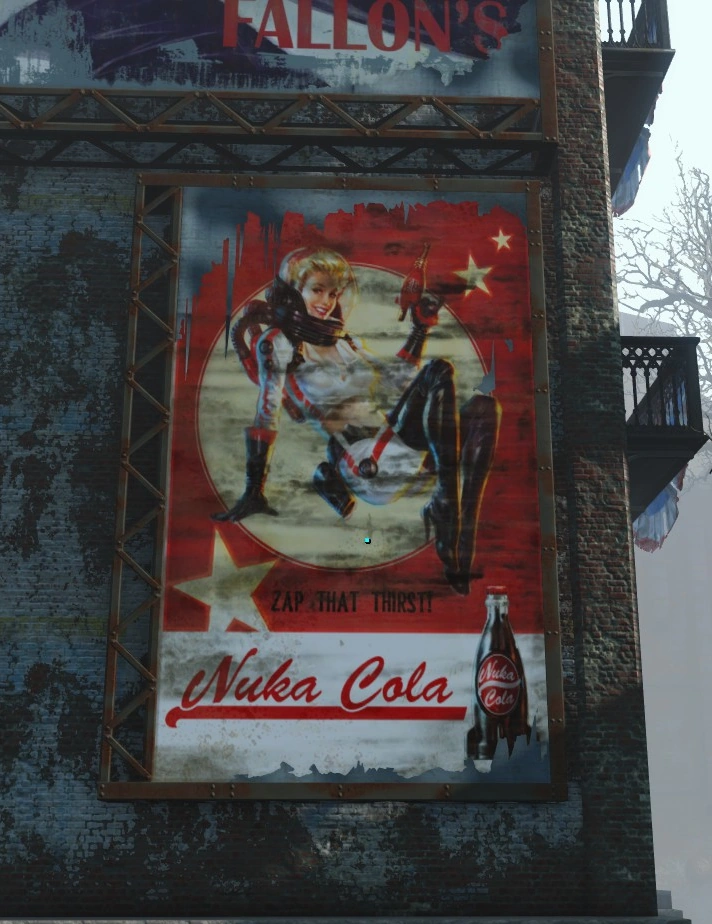
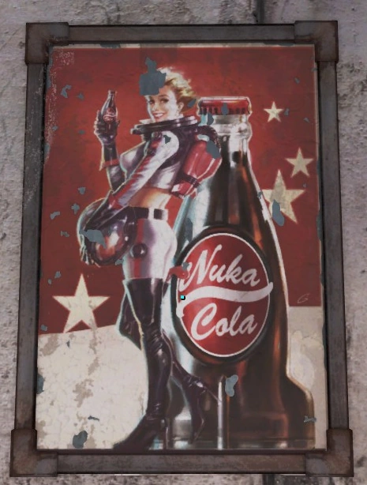
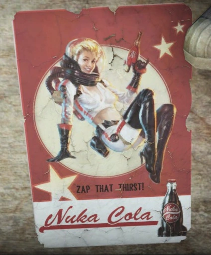
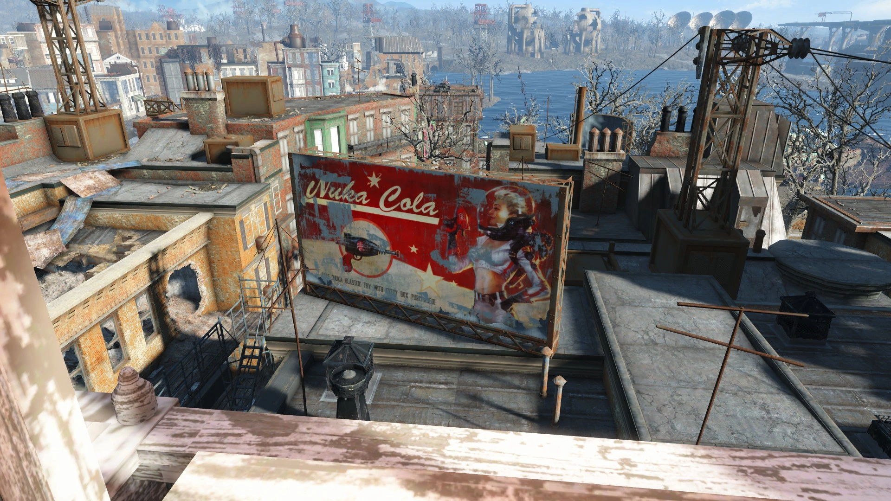
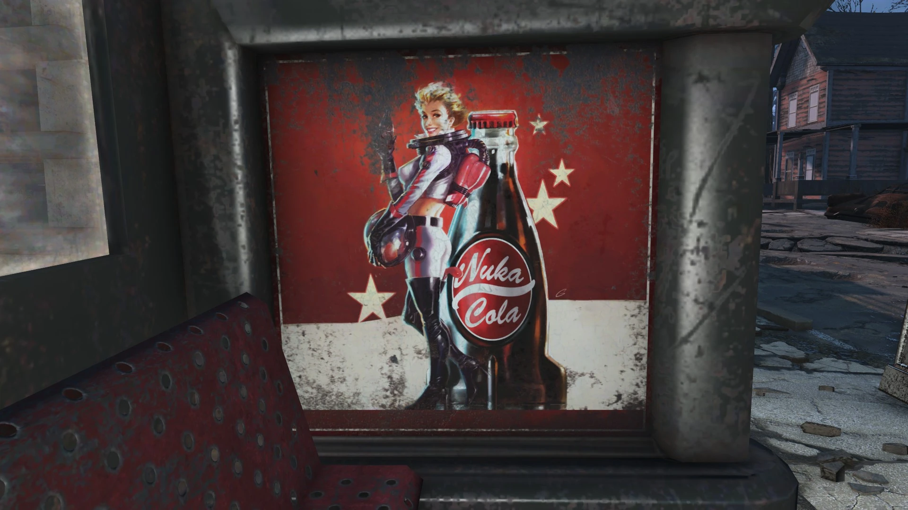
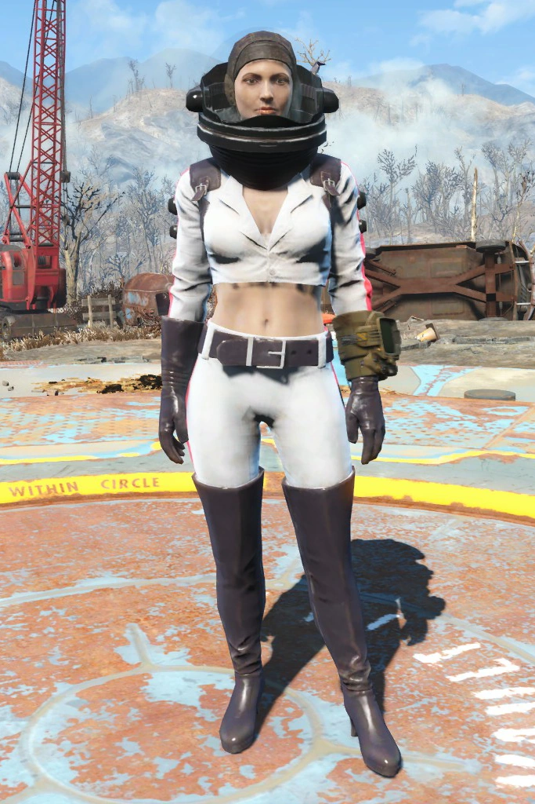
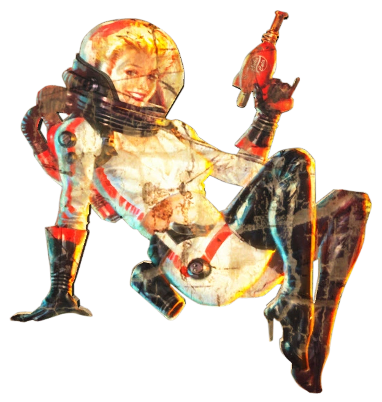
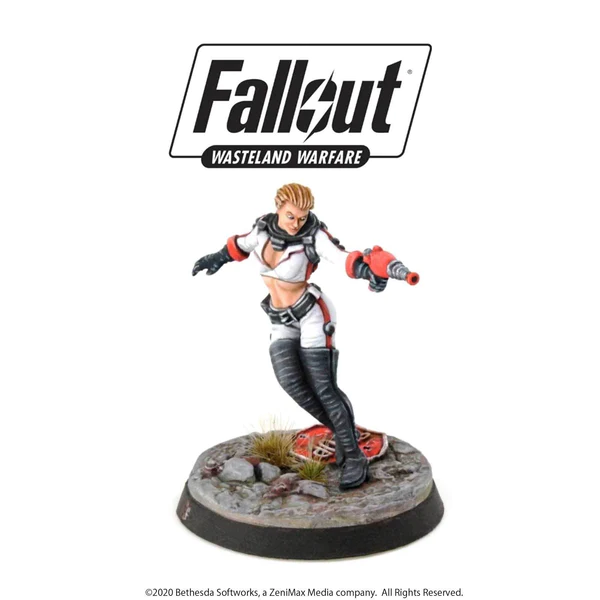
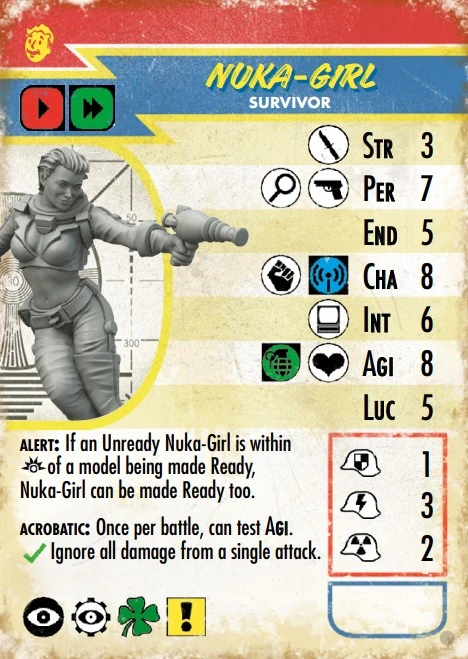

Nuka-Girl
ヌカ・ガール
ヌカ・ガールは、大戦以前のヌカ・コーラ・コーポレーションのマスコットキャラクターでした。
背景
2062年には既に登場していたヌカ・ガールは、当初、ピンナップスタイルのポスターに描かれ、露出度の高い宇宙服を着た金髪の女性として登場しました。彼女はサースト・ザッパーという光線銃を携え、お揃いの黒い手袋、サイハイヒールのブーツ、ホルスター付きのベルトを身につけていました。宇宙服と手袋の側面には赤いラインがアクセントとして入っています。
ある競合企業がヌカ・コーラのボトルデザインに対する特許侵害で訴訟を起こし、勝訴した後、ヌカ・コーラは飲料ボトルのデザインから始めて、ブランドの抜本的な刷新を決定しました。その結果、ブランドイメージは劇的に変化し、ロケット型のボトルを採用したスペースエイジをテーマとするようになり、その人気は大幅に上昇しました[1]。この新しい変化に合わせて、ヌカ・ガールもブランドの新しいテーマにぴったり合うようにリブランドされました。彼女のロケットスーツのレプリカ衣装は一般向けに販売され、瞬く間に完売しました[2]。
ロケーション
- [FO4] ヌカ・ガールのポスターは、コモンウェルス、アイランド、そしてヌカ・ワールドの各地で見つけることができます。
- [FO4NW] ヌカ・ワールドのギャラクティック・ゾーンにあるヌカ・ギャラクシー展示には、ヌカ・ガールのロケットスーツを着たヌカ・ガールのアニマトロニクスが設置されており、居住者がそのスーツを脱がせて着用することができます。
- [FO76] ヌカ・ガールの切り抜きは、ブラックマウンテン兵器工場、ワトーガ、その他アパラチアの地域に登場します。ヌカ・ガール・ロケットスーツはアトミックショップでも販売されています。
登場作品
ヌカ・ガールは、[FO4NW][3][4]、[FOSO][5]、[FWW][6]、[FTV]、そして『Vault Seller's Survival Guide』のエピソード「Meet Me in Coswald!」に登場します。彼女はまた、[FO4]、そのアドオン『Far Harbor』、そして[FO76]でも言及されています[7]。
舞台裏
『Nuka-World』アドオンのヌカ・ギャラクシーで聞かれるヌカ・ガールのボイスオーバーは、声優のアンナ・グレイブスが担当しました[8]。
ギャラリー
『Fallout 4』














『Fallout 76』


『Fallout: Wasteland Warfare』




その他


参考文献
- 『Fallout 4 ロード画面』: 「ヌカ・コーラの象徴であるロケット型ボトルは、競合企業が特許侵害で訴訟を起こし勝訴した際に、従来の曲線型ボトルに取って代わられた。幸いにも、一般の人々はこの新しいボトルを改良と見なし、ヌカ・コーラの売上は増加した。」
- 『Fallout 4 ロード画面』: 「2062年、ヌカ・ガール・ロケットスーツの衣装はハロウィンの時期に合わせて小売店で発売された。その人気は圧倒的で、店舗は需要に追いつくことができなかった。」
- ファイル:FO4NW Nuka-Girl rocketsuit Loading Screen.png (アニマトロニクスとして)
- ファイル:Nuka-Girl rocket suit Nuka Galaxy.jpg (マネキンとして)
- Twitter: @FSOL_Asia (Vault Dwellerとして)
- ファイル:FO Store Nuka-Cola-Girl.jpg (モデルとして)
- ファイル:FO76 Black Mountain Ordnance Works- TNT dome 7 (5).jpg (切り抜きとして)
- Anna Graves on Twitter: @gravyvoice
ヌカ・ガールは、アパラチアの荒廃した世界においても、希望とノスタルジーの象徴として輝き続けているわ。彼女のロケットスーツは、戦前の輝かしい未来への夢を体現していて、私たち居住者にとっては、あの頃の平和な日々を思い出させてくれる貴重な存在よ。特に、アトミックショップで彼女のロケットスーツが手に入るのは、この荒野で自分だけの物語を紡ぐ私たちにとって、ちょっとした贅沢で、気分を上げてくれるわね。ワトーガのビルボードやブラックマウンテン兵器工場で見かける彼女の姿は、たとえそれが単なる広告の残骸だとしても、この世界にまだユーモアとポップカルチャーが息づいていることを教えてくれる。彼女は単なるマスコットじゃない。アパラチアの厳しい現実の中で、私たちが前向きに生きるための、ささやかなインスピレーションを与えてくれる存在なのよ。
This article was created by translating and editing Nuka-Girl from Nukapedia: The Fallout Wiki.
Licensed under the Creative Commons Attribution-Share Alike License (CC BY-SA 3.0).
コミュニティ維持のため、寄付を受け付けております。
> COMMENTS